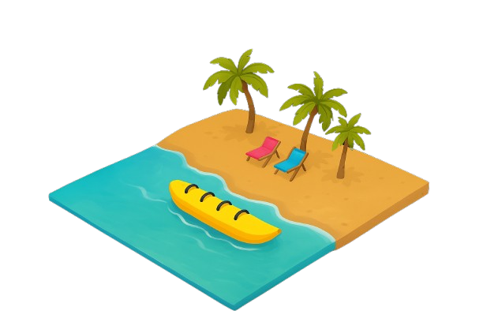
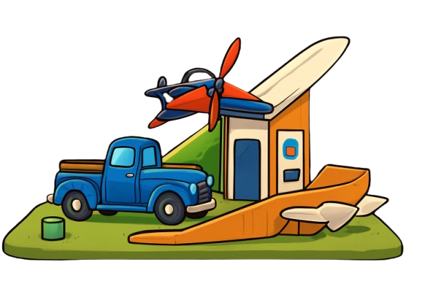
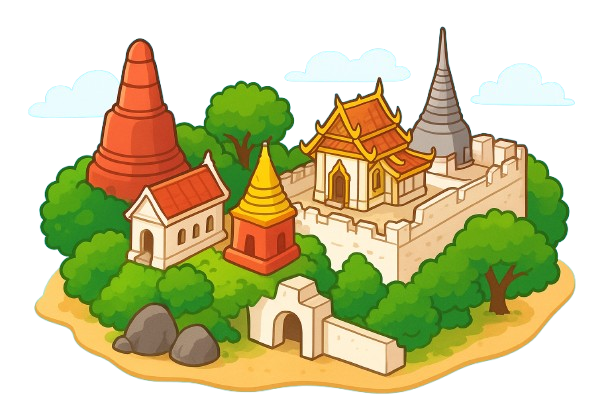
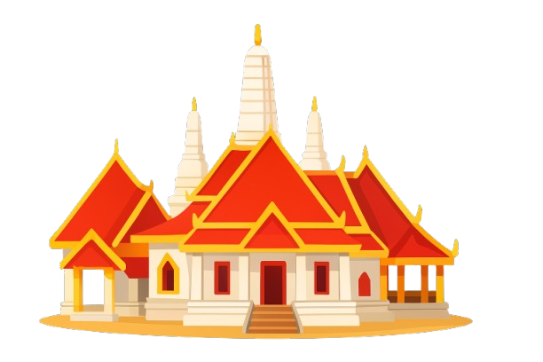
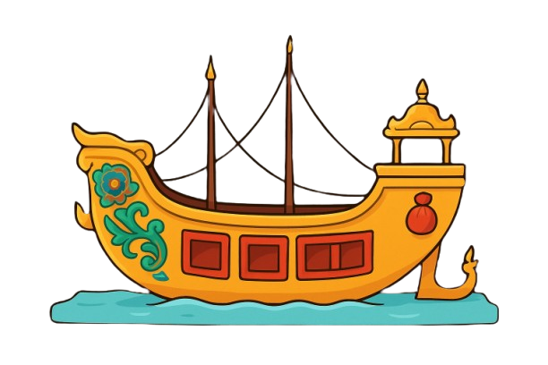
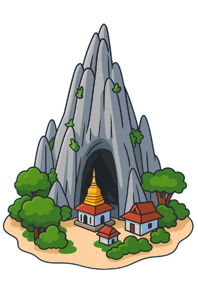

Cha-am Beach
ทะเลใกล้กรุงเทพฯ ที่ไปง่าย ได้ทั้งความสนุกและพักผ่อน
Tham Chaeng Temple
องค์พญานาคที่ใหญ่ที่สุดในประเทศไทย!
The Chang Hua Man Royal Project
แหล่งเรียนรู้การเกษตรตามหลักเศรษฐกิจพอเพียง
Khao Bandai It Temple
ย้อนเวลาสู่ยุคทองแห่งประวัติศาสตร์ที่เมืองเพชรบุรี
Phra Nakhon Khiri Historical Park
ยอดเขากลางเป็นที่ตั้งของพระธาตุจอมเพชร
Khoi Temple
สัมผัสงานปูนปั้นชั้นครูที่หาชมได้ยากที่พระธาตุฉิมพลีฯ
Phra Ram Ratchaniwet
"สัมผัสชีวิตราชวงศ์แบบใกล้ชิดในพิพิธภัณฑ์มีชีวิต"
Wat Mahathat Worawihan
ยอดพระปรางค์ 5 ยอด ที่ภายในบรรจุพระบรมสารีริกธาตุ
Wat Pak Nok Thale
เสริมโชคลาภที่ วัดนอกปากทะเล วัดริมทะเลที่สงบสุด ๆ
Khao Yoi Cave Temple
ที่นี่เป็นวัดที่ซ่อนตัวอยู่ภายในถ้ำบนภูเขาหินปูน ภายในถ้ำมีบรรยากาศขลังและเป็นที่ประดิษฐาน พระพุทธไสยาสน์ และ รอยพระพุทธบาทจำลอง ที่สวยงาม